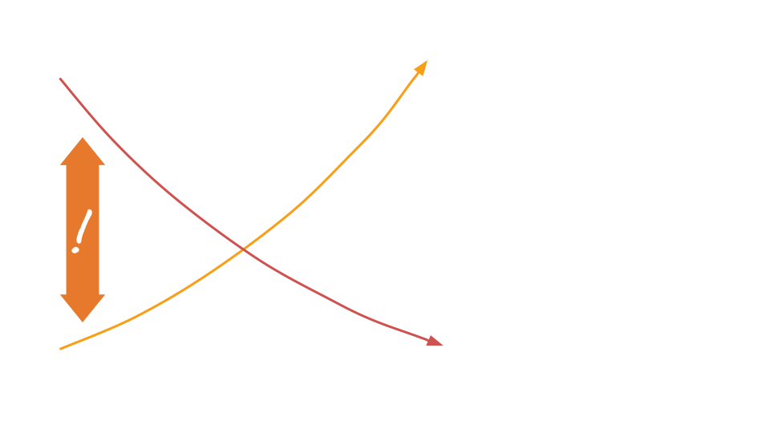

Ich entscheide immer auf Basis von Fakten!
Eben nicht! Du entscheidest auf Basis DEINER Annahmen!
Lass Deine Annahmen hinterfragen!
SPRICH MIT UNS!!!
ICH BIN DER ARCHITEKT!!!
Ich entscheide ALLEINE!
Voreilige Entscheidungen vermeiden

Viele Entscheidungen werden bereits früh getroffen ...

... zu einem Zeitpunkt an dem wir noch nicht viel Wissen sammeln konnten.

Riskante Entscheidungen verschieben
- Bessere Entscheidungsgrundlage schaffen
- Lernfenster schaffen
- Zeit aktiv nutzen
Der letzte vernünftige Moment
Der letzte vernünftige Moment

Tipps zur Umsetzung
- Risikopotential anstehender Entscheidungen abschätzen
- Schwer/teuer zu revidierende Entscheidungen verschieben
- Lernfenster schaffen und aktiv nutzen
- Alternativen beschreiben
- Umsetzungsdauer abschätzen
Der letzte vernünftige Moment
Wann ist der letzte vernünftige Moment gekommen?
Indizien:
- Kosten keine Entscheidung zu treffen, übersteigen die Kosten einer Fehlentscheidung
- Zeitraum für Umsetzung einer Alternative erschöpft sich
Einzelverantwortung vs Kollaborative Architekturarbeit
Einzelverantwortung:
Wessen mentales Modell prägt die Entscheidung?
Kollaborative Architekturarbeit:
Wessen Welche Annahmen prägen die Entscheidung?
- Gemeinsames Verständnis aufbauen
- explizit statt implizit → Annahmen hinterfragbar machen
- Chance: Mehr Fakten einfleisssen lassen
Kollaborative Architekturarbeit:
Hinterfragbare Annahmen führen zu besserem Verständnis